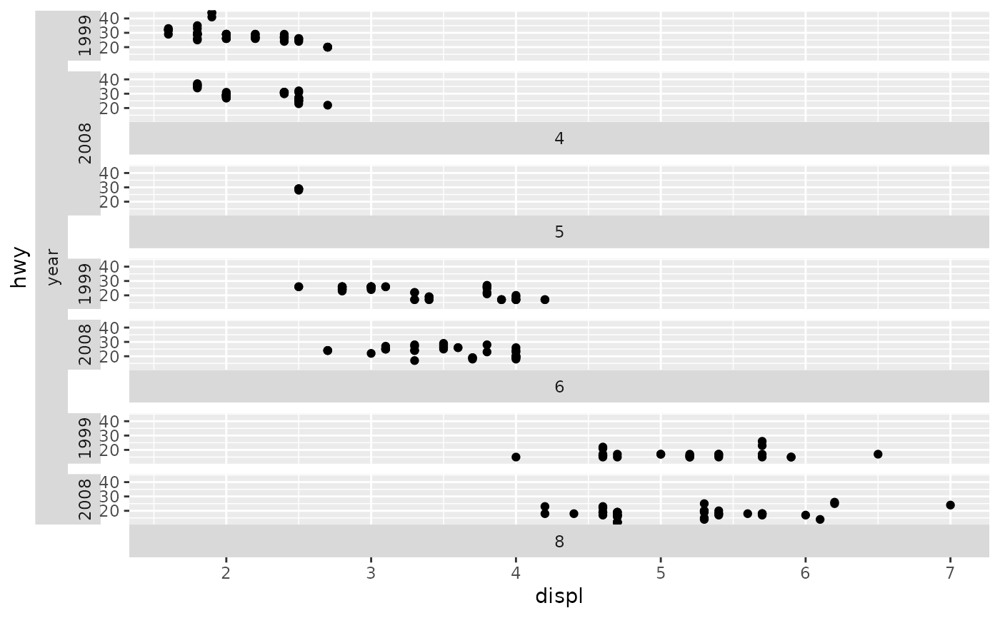

![[Experimental]](figures/lifecycle-experimental.svg)
This strip style allows a greater control over where a strip is placed relative to the panel. Different facetting variables are allowed to be placed on different sides.
Usage
strip_split(
position = c("top", "left"),
clip = "inherit",
size = "constant",
bleed = FALSE,
text_x = NULL,
text_y = NULL,
background_x = NULL,
background_y = NULL,
by_layer_x = FALSE,
by_layer_y = FALSE
)Arguments
- position
A
charactervector stating where the strips of faceting variables should be placed. Can be some of the following:"top","bottom","left"or"right". The length of thepositionargument must match the length of variables provided to thefacetsargument in wrap/manual layouts, or those provided to therowsandcolsarguments in the grid layout.- clip
A
character(1)that controls whether text labels are clipped to the background boxes. Can be either"inherit"(default),"on"or"off".- size
A
character(1)stating that the strip margins in different layers remain"constant"or are"variable".- bleed
A
logical(1)indicating whether merging of lower-layer variables is allowed when the higher-layer variables are separate. See the details ofstrip_nestedfor more info. Note that currently,strip_split()cannot recognise collisions between strips, so changing tobleed = TRUEcan have unexpected results.- text_x, text_y
A
list()withelement_text()elements. See the details section instrip_themed().- background_x, background_y
A
list()withelement_rect()elements. See the details section instrip_themed().- by_layer_x, by_layer_y
A
logical(1)that whenTRUE, maps the different elements to different layers of the strip. WhenFALSE, maps the different elements to individual strips, possibly repeating the elements to match the number of strips throughrep_len().
See also
Other strips:
strip_nested(),
strip_tag(),
strip_themed(),
strip_vanilla()
Examples
# A standard plot
p <- ggplot(mpg, aes(displ, hwy)) +
geom_point()
# --- Wrap examples ------
# Defaults to 1st (cyl) at top, 2nd (drv) on left
p + facet_wrap2(vars(cyl, drv), strip = strip_split())
# Change cyl to left, drv to bottom
p + facet_wrap2(vars(cyl, drv), strip = strip_split(c("left", "bottom")))
# --- Grid examples -----
# Display both strips levels on the left
p + facet_grid2(vars(drv), vars(cyl),
strip = strip_split(c("left", "left")))
# Separate the strips again
p + facet_grid2(vars(cyl, year),
strip = strip_split(c("bottom", "left")))
# Using a dummy variable as a title strip
p + facet_grid2(vars(cyl, "year", year),
strip = strip_split(c("bottom", "left", "left")))
